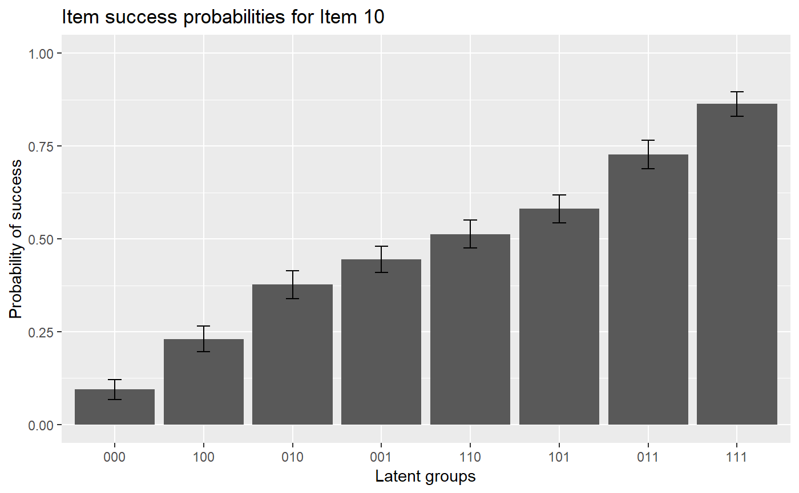
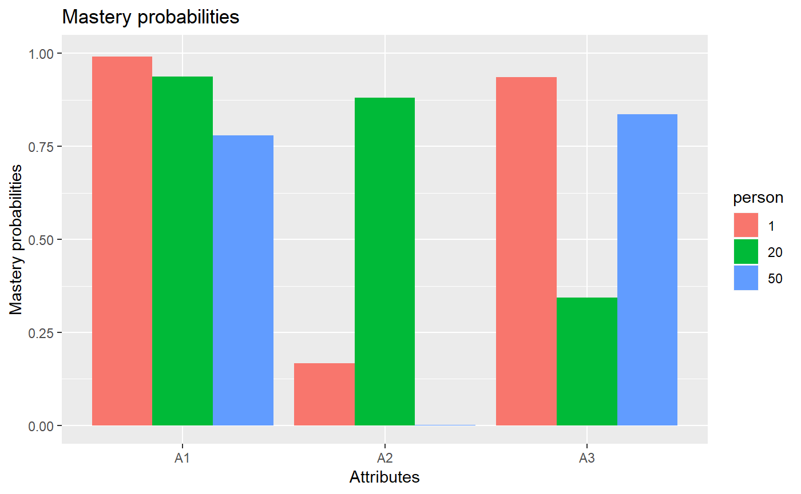

vignettes/OnlineExercises/ACDM_example.Rmd
ACDM_example.Rmdlibrary(GDINA)## ==============================================
## GDINA Package for Cognitive Diagnosis Modeling
## Version 2.1.15 (2018-6-6)
## ==============================================# A simulated data in GDINA package
dat <- sim10GDINA$simdat
Q <- sim10GDINA$simQ
# Fit ACDM model
est <- GDINA(dat = dat, Q = Q, model = "ACDM")##
Iter = 1 Max. abs. change = 0.32645 Deviance = 12821.161
Iter = 2 Max. abs. change = 0.02693 Deviance = 12099.172
Iter = 3 Max. abs. change = 0.01268 Deviance = 12080.947
Iter = 4 Max. abs. change = 0.00847 Deviance = 12076.121
Iter = 5 Max. abs. change = 0.00809 Deviance = 12073.904
Iter = 6 Max. abs. change = 0.00772 Deviance = 12072.505
Iter = 7 Max. abs. change = 0.00723 Deviance = 12071.476
Iter = 8 Max. abs. change = 0.00667 Deviance = 12070.668
Iter = 9 Max. abs. change = 0.00610 Deviance = 12070.020
Iter = 10 Max. abs. change = 0.00551 Deviance = 12069.495
Iter = 11 Max. abs. change = 0.00498 Deviance = 12069.069
Iter = 12 Max. abs. change = 0.00446 Deviance = 12068.723
Iter = 13 Max. abs. change = 0.00397 Deviance = 12068.442
Iter = 14 Max. abs. change = 0.00355 Deviance = 12068.211
Iter = 15 Max. abs. change = 0.00314 Deviance = 12068.024
Iter = 16 Max. abs. change = 0.00279 Deviance = 12067.871
Iter = 17 Max. abs. change = 0.00248 Deviance = 12067.744
Iter = 18 Max. abs. change = 0.00224 Deviance = 12067.639
Iter = 19 Max. abs. change = 0.00198 Deviance = 12067.551
Iter = 20 Max. abs. change = 0.00177 Deviance = 12067.479
Iter = 21 Max. abs. change = 0.00159 Deviance = 12067.418
Iter = 22 Max. abs. change = 0.00143 Deviance = 12067.366
Iter = 23 Max. abs. change = 0.00128 Deviance = 12067.323
Iter = 24 Max. abs. change = 0.00115 Deviance = 12067.287
Iter = 25 Max. abs. change = 0.00104 Deviance = 12067.255
Iter = 26 Max. abs. change = 0.00094 Deviance = 12067.229
Iter = 27 Max. abs. change = 0.00085 Deviance = 12067.207
Iter = 28 Max. abs. change = 0.00078 Deviance = 12067.187
Iter = 29 Max. abs. change = 0.00071 Deviance = 12067.171
Iter = 30 Max. abs. change = 0.00066 Deviance = 12067.156
Iter = 31 Max. abs. change = 0.00059 Deviance = 12067.144
Iter = 32 Max. abs. change = 0.00054 Deviance = 12067.134
Iter = 33 Max. abs. change = 0.00049 Deviance = 12067.125
Iter = 34 Max. abs. change = 0.00045 Deviance = 12067.117
Iter = 35 Max. abs. change = 0.00042 Deviance = 12067.110
Iter = 36 Max. abs. change = 0.00039 Deviance = 12067.104
Iter = 37 Max. abs. change = 0.00035 Deviance = 12067.099
Iter = 38 Max. abs. change = 0.00033 Deviance = 12067.095
Iter = 39 Max. abs. change = 0.00030 Deviance = 12067.091
Iter = 40 Max. abs. change = 0.00028 Deviance = 12067.088
Iter = 41 Max. abs. change = 0.00025 Deviance = 12067.085
Iter = 42 Max. abs. change = 0.00023 Deviance = 12067.082
Iter = 43 Max. abs. change = 0.00022 Deviance = 12067.080
Iter = 44 Max. abs. change = 0.00020 Deviance = 12067.078
Iter = 45 Max. abs. change = 0.00018 Deviance = 12067.077
Iter = 46 Max. abs. change = 0.00015 Deviance = 12067.075
Iter = 47 Max. abs. change = 0.00018 Deviance = 12067.074
Iter = 48 Max. abs. change = 0.00013 Deviance = 12067.073
Iter = 49 Max. abs. change = 0.00012 Deviance = 12067.072
Iter = 50 Max. abs. change = 0.00011 Deviance = 12067.071
Iter = 51 Max. abs. change = 0.00011 Deviance = 12067.071
Iter = 52 Max. abs. change = 0.00010 Deviance = 12067.070
Iter = 53 Max. abs. change = 0.00010 Deviance = 12067.070#####################################
#
# Summary Information
#
#####################################
# print estimation information
est## Call:
## GDINA(dat = dat, Q = Q, model = "ACDM")
##
## GDINA version 2.1.15 (2018-6-6)
## ===============================================
## Data
## -----------------------------------------------
## # of individuals groups items
## 1000 1 10
## ===============================================
## Model
## -----------------------------------------------
## Fitted model(s) = ACDM
## Attribute structure = saturated
## Attribute level = Dichotomous
## ===============================================
## Estimation
## -----------------------------------------------
## Number of iterations = 53
## For the final iteration:
## Max abs change in item success prob. = 0.0001
## Max abs change in mixing proportions = 0.0000
## Change in -2 log-likelihood = 0.0005
## Time used = 0.3211 secs# summary information
summary(est)##
## Test Fit Statistics
##
## Loglik = -6033.53
## AIC = 12137.07 | penalty = 70
## BIC = 12308.84 | penalty = 241.77
## # par = 35
##
## Attribute Prevalence
##
## Level0 Level1
## A1 0.5199 0.4801
## A2 0.5321 0.4679
## A3 0.5316 0.4684AIC(est) #AIC## [1] 12137.07BIC(est) #BIC## [1] 12308.84logLik(est) #log-likelihood value## 'log Lik.' -6033.535 (df=35)deviance(est) # deviance: -2 log-likelihood## [1] 12067.07npar(est) # number of parameters## No. of total parameters = 35
## No. of item parameters = 28
## No. of population parameters = 7nobs(est) # number of observations## [1] 1000# discrimination indices
extract(est, "discrim")## P(1)-P(0) GDI
## Item 1 0.6813006 0.11585806
## Item 2 0.6869707 0.11749520
## Item 3 0.7965981 0.15800752
## Item 4 0.7946512 0.08041265
## Item 5 0.5586415 0.04030929
## Item 6 0.5121710 0.03298079
## Item 7 0.7344802 0.06759673
## Item 8 0.7325580 0.06725140
## Item 9 0.6859310 0.06083085
## Item 10 0.7687564 0.05624874#####################################
#
# structural parameters
#
#####################################
coef(est) # item probabilities of success for each reduced latent class## $`Item 1`
## P(0) P(1)
## 0.2228 0.9041
##
## $`Item 2`
## P(0) P(1)
## 0.1396 0.8266
##
## $`Item 3`
## P(0) P(1)
## 0.1439 0.9405
##
## $`Item 4`
## P(00) P(10) P(01) P(11)
## 0.0892 0.4091 0.5640 0.8839
##
## $`Item 5`
## P(00) P(10) P(01) P(11)
## 0.0362 0.2916 0.3394 0.5949
##
## $`Item 6`
## P(00) P(10) P(01) P(11)
## 0.4791 0.7196 0.7508 0.9913
##
## $`Item 7`
## P(00) P(10) P(01) P(11)
## 0.0762 0.4967 0.3901 0.8107
##
## $`Item 8`
## P(00) P(10) P(01) P(11)
## 0.0472 0.4070 0.4200 0.7798
##
## $`Item 9`
## P(00) P(10) P(01) P(11)
## 0.1164 0.4279 0.4907 0.8023
##
## $`Item 10`
## P(000) P(100) P(010) P(001) P(110) P(101) P(011) P(111)
## 0.0945 0.2304 0.3767 0.4450 0.5127 0.5809 0.7272 0.8632coef(est, withSE = TRUE) # item probabilities of success & standard errors## $`Item 1`
## P(0) P(1)
## Est. 0.2228 0.9041
## S.E. 0.0293 0.0269
##
## $`Item 2`
## P(0) P(1)
## Est. 0.1396 0.8266
## S.E. 0.0265 0.0299
##
## $`Item 3`
## P(0) P(1)
## Est. 0.1439 0.9405
## S.E. 0.0248 0.0215
##
## $`Item 4`
## P(00) P(10) P(01) P(11)
## Est. 0.0892 0.4091 0.5640 0.8839
## S.E. 0.0221 0.0324 0.0324 0.0290
##
## $`Item 5`
## P(00) P(10) P(01) P(11)
## Est. 0.0362 0.2916 0.3394 0.5949
## S.E. 0.0127 0.0368 0.0369 0.0318
##
## $`Item 6`
## P(00) P(10) P(01) P(11)
## Est. 0.4791 0.7196 0.7508 0.9913
## S.E. 0.0282 0.0360 0.0365 0.0121
##
## $`Item 7`
## P(00) P(10) P(01) P(11)
## Est. 0.0762 0.4967 0.3901 0.8107
## S.E. 0.0229 0.0326 0.0321 0.0295
##
## $`Item 8`
## P(00) P(10) P(01) P(11)
## Est. 0.0472 0.4070 0.4200 0.7798
## S.E. 0.0195 0.0357 0.0364 0.0321
##
## $`Item 9`
## P(00) P(10) P(01) P(11)
## Est. 0.1164 0.4279 0.4907 0.8023
## S.E. 0.0231 0.0337 0.0328 0.0293
##
## $`Item 10`
## P(000) P(100) P(010) P(001) P(110) P(101) P(011) P(111)
## Est. 0.0945 0.2304 0.3767 0.4450 0.5127 0.5809 0.7272 0.8632
## S.E. 0.0264 0.0343 0.0379 0.0357 0.0373 0.0380 0.0376 0.0328coef(est, what = "delta") # delta parameters## $`Item 1`
## d0 d1
## 0.2228 0.6813
##
## $`Item 2`
## d0 d1
## 0.1396 0.6870
##
## $`Item 3`
## d0 d1
## 0.1439 0.7966
##
## $`Item 4`
## d0 d1 d2
## 0.0892 0.3199 0.4747
##
## $`Item 5`
## d0 d1 d2
## 0.0362 0.2554 0.3032
##
## $`Item 6`
## d0 d1 d2
## 0.4791 0.2405 0.2717
##
## $`Item 7`
## d0 d1 d2
## 0.0762 0.4205 0.3139
##
## $`Item 8`
## d0 d1 d2
## 0.0472 0.3598 0.3728
##
## $`Item 9`
## d0 d1 d2
## 0.1164 0.3116 0.3743
##
## $`Item 10`
## d0 d1 d2 d3
## 0.0945 0.1360 0.2823 0.3505coef(est, what = "delta", withSE = TRUE) # delta parameters## $`Item 1`
## d0 d1
## Est. 0.2228 0.6813
## S.E. 0.0293 0.0469
##
## $`Item 2`
## d0 d1
## Est. 0.1396 0.6870
## S.E. 0.0265 0.0466
##
## $`Item 3`
## d0 d1
## Est. 0.1439 0.7966
## S.E. 0.0248 0.0370
##
## $`Item 4`
## d0 d1 d2
## Est. 0.0892 0.3199 0.4747
## S.E. 0.0221 0.0366 0.0347
##
## $`Item 5`
## d0 d1 d2
## Est. 0.0362 0.2554 0.3032
## S.E. 0.0127 0.0396 0.0369
##
## $`Item 6`
## d0 d1 d2
## Est. 0.4791 0.2405 0.2717
## S.E. 0.0282 0.0378 0.0372
##
## $`Item 7`
## d0 d1 d2
## Est. 0.0762 0.4205 0.3139
## S.E. 0.0229 0.0381 0.0335
##
## $`Item 8`
## d0 d1 d2
## Est. 0.0472 0.3598 0.3728
## S.E. 0.0195 0.0384 0.0394
##
## $`Item 9`
## d0 d1 d2
## Est. 0.1164 0.3116 0.3743
## S.E. 0.0231 0.0378 0.0352
##
## $`Item 10`
## d0 d1 d2 d3
## Est. 0.0945 0.1360 0.2823 0.3505
## S.E. 0.0264 0.0367 0.0383 0.0347coef(est, what = "gs") # guessing and slip parameters## guessing slip
## Item 1 0.2228 0.0959
## Item 2 0.1396 0.1734
## Item 3 0.1439 0.0595
## Item 4 0.0892 0.1161
## Item 5 0.0362 0.4051
## Item 6 0.4791 0.0087
## Item 7 0.0762 0.1893
## Item 8 0.0472 0.2202
## Item 9 0.1164 0.1977
## Item 10 0.0945 0.1368coef(est, what = "gs", withSE = TRUE) # guessing and slip parameters & standard errors## guessing slip SE[guessing] SE[slip]
## Item 1 0.2228 0.0959 0.0293 0.0269
## Item 2 0.1396 0.1734 0.0265 0.0299
## Item 3 0.1439 0.0595 0.0248 0.0215
## Item 4 0.0892 0.1161 0.0221 0.0290
## Item 5 0.0362 0.4051 0.0127 0.0318
## Item 6 0.4791 0.0087 0.0282 0.0121
## Item 7 0.0762 0.1893 0.0229 0.0295
## Item 8 0.0472 0.2202 0.0195 0.0321
## Item 9 0.1164 0.1977 0.0231 0.0293
## Item 10 0.0945 0.1368 0.0264 0.0328# Estimated proportions of latent classes
coef(est,"lambda")## p(000) p(100) p(010) p(001) p(110) p(101) p(011) p(111)
## 0.1484 0.1421 0.1238 0.1295 0.1173 0.1122 0.1181 0.1086# success probabilities for each latent class
coef(est,"LCprob")## 000 100 010 001 110 101 011 111
## Item 1 0.2228 0.9041 0.2228 0.2228 0.9041 0.9041 0.2228 0.9041
## Item 2 0.1396 0.1396 0.8266 0.1396 0.8266 0.1396 0.8266 0.8266
## Item 3 0.1439 0.1439 0.1439 0.9405 0.1439 0.9405 0.9405 0.9405
## Item 4 0.0892 0.4091 0.0892 0.5640 0.4091 0.8839 0.5640 0.8839
## Item 5 0.0362 0.0362 0.2916 0.3394 0.2916 0.3394 0.5949 0.5949
## Item 6 0.4791 0.7196 0.7508 0.4791 0.9913 0.7196 0.7508 0.9913
## Item 7 0.0762 0.4967 0.0762 0.3901 0.4967 0.8107 0.3901 0.8107
## Item 8 0.0472 0.4070 0.4200 0.0472 0.7798 0.4070 0.4200 0.7798
## Item 9 0.1164 0.1164 0.4279 0.4907 0.4279 0.4907 0.8023 0.8023
## Item 10 0.0945 0.2304 0.3767 0.4450 0.5127 0.5809 0.7272 0.8632#####################################
#
# person parameters
#
#####################################
head(personparm(est)) # EAP estimates of attribute profiles## A1 A2 A3
## [1,] 1 0 1
## [2,] 1 1 1
## [3,] 0 1 1
## [4,] 1 0 1
## [5,] 0 0 1
## [6,] 1 0 0head(personparm(est, what = "MAP")) # MAP estimates of attribute profiles## A1 A2 A3 multimodes
## 1 1 0 1 FALSE
## 2 1 1 1 FALSE
## 3 0 1 1 FALSE
## 4 1 0 1 FALSE
## 5 0 0 1 FALSE
## 6 1 0 0 FALSEhead(personparm(est, what = "MLE")) # MLE estimates of attribute profiles## A1 A2 A3 multimodes
## 1 1 0 1 FALSE
## 2 1 1 1 FALSE
## 3 0 1 1 FALSE
## 4 1 0 1 FALSE
## 5 0 0 1 FALSE
## 6 1 0 0 FALSE#####################################
#
# Plots
#
#####################################
#plot item response functions for item 10
plot(est, item = 10)plot(est, item = 10, withSE = TRUE) # with error bars
#plot mastery probability for individuals 1, 20 and 50
plot(est, what = "mp", person = c(1, 20, 50))
#####################################
#
# Advanced elements
#
#####################################
head(indlogLik(est)) # individual log-likelihood## [,1] [,2] [,3] [,4] [,5] [,6]
## [1,] -14.890664 -6.639748 -13.217013 -8.914952 -7.213818 -3.506361
## [2,] -19.990758 -11.739843 -12.542952 -11.399318 -6.539757 -5.990728
## [3,] -14.430095 -11.817451 -9.683805 -8.468266 -7.777661 -8.007839
## [4,] -17.939211 -10.742794 -13.891298 -9.396984 -8.442355 -4.536031
## [5,] -8.292893 -8.243818 -12.244530 -4.356613 -15.506822 -6.643003
## [6,] -8.205075 -5.418108 -7.718008 -11.401971 -9.783629 -10.692854
## [,7] [,8]
## [1,] -8.825796 -5.176521
## [2,] -6.880173 -3.230898
## [3,] -6.394701 -6.966506
## [4,] -8.021795 -5.234050
## [5,] -9.337468 -15.260958
## [6,] -12.499398 -16.154464head(indlogPost(est)) # individual log-posterior## [,1] [,2] [,3] [,4] [,5] [,6]
## [1,] -11.346168 -3.1390461 -9.853783 -5.5068107 -3.904263 -0.2417478
## [2,] -16.573274 -8.3661516 -9.306733 -8.1181881 -3.357212 -2.8531251
## [3,] -8.567876 -5.9990261 -4.002852 -2.7424020 -2.150383 -2.4255020
## [4,] -13.559365 -6.4067406 -9.692717 -5.1534919 -4.297449 -0.4360660
## [5,] -3.930566 -3.9252851 -8.063469 -0.1306408 -11.379436 -2.5605583
## [6,] -2.899586 -0.1564117 -2.593784 -6.2328356 -4.713079 -5.6672463
## [,7] [,8]
## [1,] -5.5097812 -1.9442432
## [2,] -3.6911697 -0.1256317
## [3,] -0.7609629 -1.4165054
## [4,] -3.8704296 -1.1664211
## [5,] -5.2036224 -11.2108496
## [6,] -7.4223897 -11.1611925extract(est,"designmatrix") #design matrix## [[1]]
## [,1] [,2]
## [1,] 1 0
## [2,] 1 1
##
## [[2]]
## [,1] [,2]
## [1,] 1 0
## [2,] 1 1
##
## [[3]]
## [,1] [,2]
## [1,] 1 0
## [2,] 1 1
##
## [[4]]
## [,1] [,2] [,3]
## [1,] 1 0 0
## [2,] 1 1 0
## [3,] 1 0 1
## [4,] 1 1 1
##
## [[5]]
## [,1] [,2] [,3]
## [1,] 1 0 0
## [2,] 1 1 0
## [3,] 1 0 1
## [4,] 1 1 1
##
## [[6]]
## [,1] [,2] [,3]
## [1,] 1 0 0
## [2,] 1 1 0
## [3,] 1 0 1
## [4,] 1 1 1
##
## [[7]]
## [,1] [,2] [,3]
## [1,] 1 0 0
## [2,] 1 1 0
## [3,] 1 0 1
## [4,] 1 1 1
##
## [[8]]
## [,1] [,2] [,3]
## [1,] 1 0 0
## [2,] 1 1 0
## [3,] 1 0 1
## [4,] 1 1 1
##
## [[9]]
## [,1] [,2] [,3]
## [1,] 1 0 0
## [2,] 1 1 0
## [3,] 1 0 1
## [4,] 1 1 1
##
## [[10]]
## [,1] [,2] [,3] [,4]
## [1,] 1 0 0 0
## [2,] 1 1 0 0
## [3,] 1 0 1 0
## [4,] 1 0 0 1
## [5,] 1 1 1 0
## [6,] 1 1 0 1
## [7,] 1 0 1 1
## [8,] 1 1 1 1extract(est,"linkfunc") #link functions## [1] "identity" "identity" "identity" "identity" "identity" "identity"
## [7] "identity" "identity" "identity" "identity"sessionInfo()## R version 3.5.1 (2018-07-02)
## Platform: i386-w64-mingw32/i386 (32-bit)
## Running under: Windows 10 x64 (build 17134)
##
## Matrix products: default
##
## locale:
## [1] LC_COLLATE=English_United States.1252
## [2] LC_CTYPE=English_United States.1252
## [3] LC_MONETARY=English_United States.1252
## [4] LC_NUMERIC=C
## [5] LC_TIME=English_United States.1252
##
## attached base packages:
## [1] stats graphics grDevices utils datasets methods base
##
## other attached packages:
## [1] GDINA_2.1.15
##
## loaded via a namespace (and not attached):
## [1] commonmark_1.5 digest_0.6.15 htmltools_0.3.6
## [4] R6_2.2.2 scales_1.0.0 Rsolnp_1.16
## [7] assertthat_0.2.0 rprojroot_1.3-2 grid_3.5.1
## [10] fs_1.2.5 stringr_1.3.1 knitr_1.20
## [13] numDeriv_2016.8-1 munsell_0.5.0 desc_1.2.0
## [16] shinydashboard_0.7.0 pillar_1.3.0 tibble_1.4.2
## [19] compiler_3.5.1 httpuv_1.4.5 mime_0.5
## [22] xml2_1.2.0 labeling_0.3 pkgdown_1.1.0
## [25] roxygen2_6.1.0 later_0.7.3 shiny_1.1.0
## [28] rstudioapi_0.7 ggplot2_3.0.0 MASS_7.3-50
## [31] plyr_1.8.4 stringi_1.2.4 magrittr_1.5
## [34] rmarkdown_1.10 evaluate_0.11 gtable_0.2.0
## [37] rlang_0.2.1 colorspace_1.3-2 promises_1.0.1
## [40] yaml_2.2.0 tools_3.5.1 alabama_2015.3-1
## [43] parallel_3.5.1 truncnorm_1.0-8 nloptr_1.0.4
## [46] xtable_1.8-2 lazyeval_0.2.1 crayon_1.3.4
## [49] backports_1.1.2 memoise_1.1.0 Rcpp_0.12.18